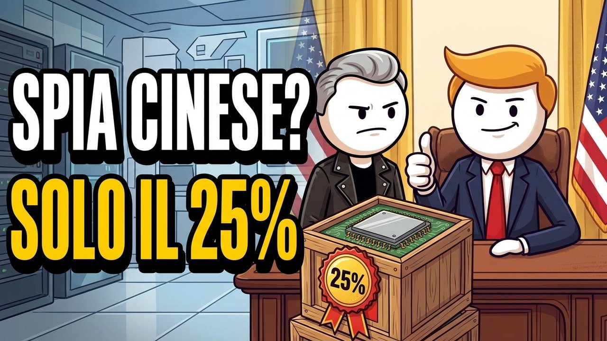

Nvidia scandalo: Jensen Huang si dimette. Ma per i chip alla Cina bastava il 25%
17 novembre 2026 · 4:53
Oggi la posta arriva dalla California. Mittente: Nvidia, che a inizio ottobre valeva in borsa quasi 6.000 miliardi di dollari. Nella busta due lettere: il fondatore e allora amministratore delegato, Jensen Huang, scrive ai dipendenti che sostiene l'indagine e collaborerà pienamente; il consiglio scrive che Huang è stato il bersaglio di un'operazione di intelligence straniera e che i segreti di Nvidia non sono stati compromessi, mentre l'indagine comincia adesso. Secondo il New York Times, che cita persone informate, una dirigente di un'azienda di Singapore lavorava per il Ministero della Sicurezza di Stato cinese: nessuna accusa formale, e Nvidia parla di contatti normali con i clienti. Ma per far arrivare i chip in Cina bastava la posta della Casa Bianca: a dicembre 2025 il presidente Donald Trump ha dato via libera agli H200 per i clienti approvati in Cina, con il 25% agli Stati Uniti. L'8 novembre il consiglio di Nvidia scrive di avere fiducia in Huang, il 9 Trump dice che ha fatto un lavoro fantastico; il 12 novembre Huang si dimette con effetto immediato, senza motivi nel comunicato, e la direttrice finanziaria Colette Kress diventa amministratrice delegata ad interim. Tre commissioni della Camera gli chiedono un'audizione a porte chiuse per il 1° dicembre, o il mandato di comparizione: Huang ha accettato, data ancora da fissare.
0:00 Posta dalla California 0:17 Le due lettere: Huang e il consiglio 0:59 Il mittente straniero 1:27 Fatica sprecata: la posta della Casa Bianca e il 25% 2:25 Il memo della primavera 2:41 Tocca al Congresso 2:53 Piena fiducia, poi le dimissioni 3:37 I conti senza il fondatore 3:52 Ricevuta della consegna
Satira su fatti veri: le battute sono nostre, i fatti no, e le fonti sono nella scheda Fonti. Disegni con Nano Banana Pro (Google Flow), copione e montaggio con Claude Opus 5.5, voce di Piocy Tracoto clonata con ElevenLabs.